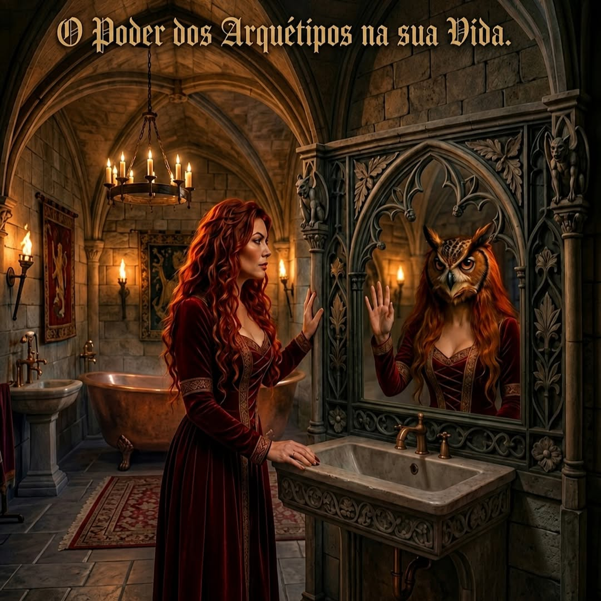
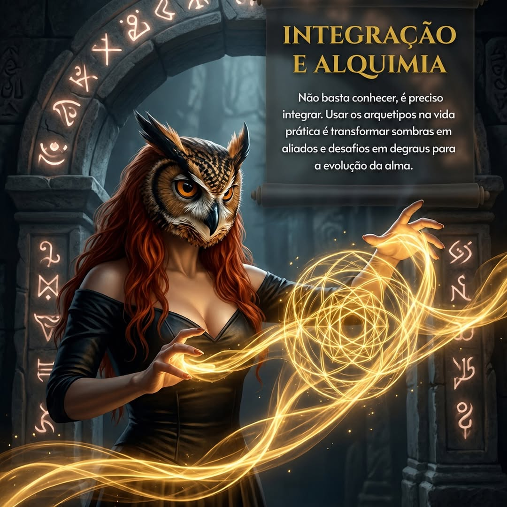
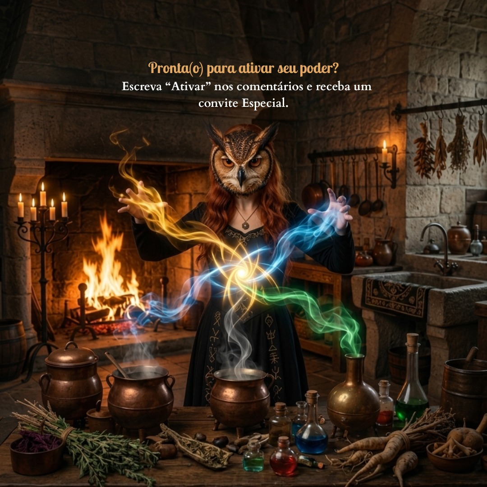

247 páginas de mistério, fantasia e transformação
Há livros que passam.
Este fica à espreita.
A Saga da Mulher Coruja não se abre como quem acende uma janela ao meio-dia. Ela se oferece como a noite: em camadas, em presságios, em brilhos breves que só existem para quem aceita demorar os olhos. Aqui, a fantasia não consola. Ela chama, rodeia, desce sobre o leitor como asa, sombra e anúncio.
🜂 Toda travessia verdadeira começa quando a escuridão enfim pronuncia o teu nome
Um fragmento vivo do universo simbólico corre ao lado da narrativa, como se o site respirasse junto com o livro.
O livro
Uma história que se aproxima como quem já te conhecia antes de chegar.
Agora a página não depende só de imagem estática. O fundo em movimento cria atmosfera contínua, enquanto a lateral conduz o olhar como se a própria obra estivesse chamando o leitor para dentro.
A Saga da Mulher Coruja nasce onde o visível começa a falhar. Há nela a delicadeza das coisas antigas e o peso das revelações que não vêm sem custo. O mistério, aqui, não é ornamento: é respiração, direção, chão movediço e promessa.
Cada avanço na narrativa parece tocar uma porta que estava fechada muito antes do primeiro capítulo. O leitor não recebe apenas acontecimentos. Recebe sinais, presenças, imagens que se repetem como se o livro falasse também por baixo da própria voz.
E quando a fantasia se abre por inteiro, não o faz para oferecer fuga fácil, mas para devolver o mundo transfigurado: mais fundo, mais estranho, mais íntimo. O que termina na página continua demorando dentro de quem leu.
Visões de Elarion
As imagens agora participam da narrativa.
Usei as imagens locais que você enviou como uma sequência visual própria, em vez de deixá-las soltas. Elas entram como ecos do mesmo universo mítico e feminino que sustenta a obra.



Temas centrais
As correntes invisíveis que empurram a leitura para dentro.
Em lugar de resumir, esta parte sugere. O livro é apresentado por suas forças mais secretas, aquelas que permanecem acesas mesmo depois do fim.
🌒
Mistério
O escuro não é ausência, mas linguagem. Tudo o que parece oculto trabalha, em silêncio, para aproximar o leitor daquilo que o espera adiante.
🜁
Simbolismo
As imagens não surgem apenas para adornar. Elas retornam como sinais de um segundo texto, mais profundo, escrito no subsolo da narrativa.
🦉
Transformação
A travessia fantástica conduz a uma mudança real. Quem atravessa a obra não sai ileso: sai deslocado, tocado, um pouco outro.
A autora
A mente por trás dos Sete Reinos.
A bio abaixo foi integrada a partir do conteúdo publicado no site original da obra, para que a landing não perca a presença da autora nem o contexto espiritual e simbólico da criação.

Bio original
Mônicah Sântoz
Mônicah Sântoz é escritora, infoprodutora e terapeuta holística há mais de 17 anos. Sua trajetória é marcada pelo estudo profundo das terapias naturais e vibracionais, onde o invisível se torna ferramenta de cura.
Especialista em Aromatologia, Florais, Apiterapia e Trofoterapia, Mônicah não apenas escreve histórias; ela transporta sua sensibilidade e experiência clínica para a construção de universos literários onde o arquétipo é a bússola.
Em A Saga da Mulher Coruja, ela une sua paixão pelo mistério à precisão terapêutica, criando não apenas um livro, mas um sistema oracular real: o Baralho de Elarion, projetado para trazer clareza e orientação para a jornada pessoal de cada leitor.
Instagram: @monica_pirita
Para quem é
Para leitores que ainda sabem seguir uma chama dentro da névoa.
Não é uma chamada para todos. É um reconhecimento. A página agora procura quem se move por atmosfera, rumor, símbolo e espanto demorado.
Fantasia de bruma e silêncio
Para quem ama mundos que não se entregam de imediato e cuja beleza depende também daquilo que permanece velado.
Livros com segunda voz
Para leitores que pressentem metáforas antes de explicá-las e reconhecem, nos símbolos, um idioma antigo que continua chamando.
Jornadas de passagem
Para quem se comove com narrativas em que algo precisa morrer em silêncio para que outra forma de ver finalmente desperte.
Nova direção literária
Uma landing que agora respira, se move e sustenta presença.
O site passa a usar o vídeo de fundo como atmosfera contínua, um vídeo lateral como elemento vivo dentro da hero e uma galeria construída com suas imagens locais. Isso deixa a experiência menos estática e mais coerente com o universo mítico da obra.